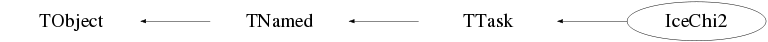

class IceChi2: public TTask
Class IceChi2 TTask derived class to perform track fitting via chi-squared minimisation. In case an event has been rejected by an NcEventSelector (based) processor, this task (and its sub-tasks) is not executed. For the minimisation process the TFitter facility, which is basically Minuit, is used. Minimisation is performed by invokation of the SIMPLEX method, followed by an invokation of HESSE to determine the uncertainties on the results. The statistics of the TFitter result are stored as an NcSignal object in the track, which can be obtained via the GetFitDetails memberfunction. After the chi-squared minimisation procedure has been performed, an overall plausibility for the fitted track will be determined based on a convoluted Pandel pdf value for each used hit. This track plausibility is expressed in terms of a Bayesian psi value w.r.t. a Convoluted Pandel PDF. The Baysian psi value is defined as -loglikelihood in a decibel scale. This implies psi=-10*log10(L) where L=p(D|HI) being the likelihood of the data D under the hypothesis H and prior information I. Since all (associated) hits contribute independently to the Bayesian psi value, this psi value is built up by summation of the various hit contributions. As such, the FitDetails entries contain the statistics of all the different hit contributions, like PsiMedian, PsiMean, and PsiSigma. The Bayesian psi value is available in the fit details under the name "PsiSum". In addition the standard Minuit results like IERFIT, FCN, EDM etc... are also available from the FitDetails. The convoluted Pandel value is evaluated in various areas in the distance-time space as described in Astropart. Phys. 28 (2007) 456-462 by N. van Eijndhoven, O. Fadiran and G. Japaridze In case the distance-time point of a certain hit falls outside the validity rectangle, the point is moved onto the corresponding side location of the rectangle. For this new location the Pandel value is evaluated for this hit and an extra penalty is added to the corresponding psi value for this hit. By default this penalty value amounts to 0 dB, but the user can modify this penalty value via the memberfunction SetPenalty. This allows investigation/tuning of the sensitivity to hits with extreme distance and/or time residual values. A separate treatment of the phase and group velocities is introduced which will provide more accurate time residuals due to the different velocities of the Cerenkov wave front (v_phase) and the actually detected photons (v_group). This distinction between v_phase and v_group can be (de)activated via the memberfunction SetVgroupUsage(). By default the distinction between v_phase and v_group is activated in the constructor of this class. Use the UseTracks memberfunction to specify the first guess tracks to be processed by the minimiser. By default only the first encountered IceDwalkA and/or IceDwalkI track(s) will be processed. Use the SelectHits memberfunction to specify the hits to be used. By default all hit cleaning survived hits are used of those detector systems (e.g. Amanda, InIce) that were used to construct the first guess track. Information about the actual parameter settings can be found in the event structure itself via the device named "IceChi2". The fit processor printlevel can be selected via the memberfunction SetPrintLevel. By default all printout is suppressed (i.e. level=-2). An example of how to invoke this processor after Xtalk, hit cleaning and a direct walk first guess estimate can be found in the ROOT example macro icechi2.cc which resides in the /macros subdirectory. The minimisation results are stored in the IceEvent structure as tracks with as default the name "IceChi2". A suffix "A" for an Amanda (OM) track, a suffix "I" for an InIce (DOM) track or a suffix "C" for a combined Amanda/InIce (i.e. OM and DOM) track will be added to the name automatically (just like the first guess results of e.g. IceDwalk). This track name identifier can be modified by the user via the SetTrackName() memberfunction. This will allow unique identification of tracks which are produced when re-processing existing data with different criteria. Note that a suffix "A", "I" or "C" will always be generated automatically. By default the charge of the produced tracks is set to 0, since no distinction can be made between positive or negative tracks. However, the user can define the track charge by invokation of the memberfunction SetCharge(). This facility may be used to distinguish tracks produced by the various reconstruction algorithms in a (3D) colour display (see the class NcHelix for further details). A pointer to the first guess track which was used as input is available via the GetParentTrack facility of these "IceChi2" tracks. Furthermore, all the hits that were used in the minisation are available via the GetSignal facility of a certain track. An example of how the various data can be accessed is given below, where "evt" indicates the pointer to the IceEvent structure. Example for accessing data : TObjArray* tracks=evt->GetTracks("IceChi2"); if (!tracks) return; NcPosition* r0=0; Float_t psi=0; for (Int_t jtk=0; jtk<tracks->GetEntries(); jtk++) { NcTrack* tx=(NcTrack*)tracks->At(jtk); if (!tx) continue; tx->Data("sph"); r0=tx->GetReferencePoint(); if (r0) r0->Data(); sx=(NcSignal*)tx->GetFitDetails(); if (sx) psi=sx->GetSignal("PsiSum"); NcTrack* tx2=tx->GetParentTrack(); if (!tx2) continue; tx2->Data("sph"); r0=tx2->GetReferencePoint(); if (r0) r0->Data(); } Notes : 1) This processor only works properly on data which are Time and ADC calibrated and contain tracks from first guess algorithms like e.g. IceDwalk. 2) In view of the usage of TFitter/Minuit minimisation, a global pointer to the instance of this class (gIceChi2) and a global static wrapper function (IceChi2FCN) have been introduced, to allow the actual minimisation to be performed via the memberfunction FitFCN. This implies that in a certain processing job only 1 instance of this IceChi2 class may occur. --- Author: Nick van Eijndhoven 16-may-2006 Utrecht University - Modified: NvE $Date: 2012-01-03 14:30:57 +0100 (Tue, 03 Jan 2012) $ NCFS
Function Members (Methods)
public:
| IceChi2(const IceChi2&) | |
| IceChi2(const char* name = "", const char* title = "") | |
| virtual | ~IceChi2() |
| virtual void | TTask::Abort()MENU |
| void | TObject::AbstractMethod(const char* method) const |
| virtual void | TTask::Add(TTask* task) |
| virtual void | TObject::AppendPad(Option_t* option = "") |
| virtual void | TTask::Browse(TBrowser* b) |
| static TClass* | Class() |
| virtual const char* | TObject::ClassName() const |
| virtual void | TTask::CleanTasks() |
| virtual void | TTask::Clear(Option_t* option = "") |
| virtual TObject* | TNamed::Clone(const char* newname = "") const |
| virtual Int_t | TNamed::Compare(const TObject* obj) const |
| virtual void | TTask::Continue()MENU |
| virtual void | TNamed::Copy(TObject& named) const |
| virtual void | TObject::Delete(Option_t* option = "")MENU |
| virtual Int_t | TObject::DistancetoPrimitive(Int_t px, Int_t py) |
| virtual void | TObject::Draw(Option_t* option = "") |
| virtual void | TObject::DrawClass() constMENU |
| virtual TObject* | TObject::DrawClone(Option_t* option = "") constMENU |
| virtual void | TObject::Dump() constMENU |
| virtual void | TObject::Error(const char* method, const char* msgfmt) const |
| virtual void | Exec(Option_t* opt) |
| virtual void | TObject::Execute(const char* method, const char* params, Int_t* error = 0) |
| virtual void | TObject::Execute(TMethod* method, TObjArray* params, Int_t* error = 0) |
| virtual void | TObject::ExecuteEvent(Int_t event, Int_t px, Int_t py) |
| virtual void | TTask::ExecuteTask(Option_t* option = "0")MENU |
| virtual void | TTask::ExecuteTasks(Option_t* option) |
| virtual void | TObject::Fatal(const char* method, const char* msgfmt) const |
| virtual void | TNamed::FillBuffer(char*& buffer) |
| virtual TObject* | TObject::FindObject(const char* name) const |
| virtual TObject* | TObject::FindObject(const TObject* obj) const |
| void | FitFCN(Int_t&, Double_t*, Double_t&, Double_t*, Int_t) |
| Int_t | TTask::GetBreakin() const |
| Int_t | TTask::GetBreakout() const |
| virtual Option_t* | TObject::GetDrawOption() const |
| static Long_t | TObject::GetDtorOnly() |
| virtual const char* | TObject::GetIconName() const |
| TList* | TTask::GetListOfTasks() const |
| virtual const char* | TNamed::GetName() const |
| virtual char* | TObject::GetObjectInfo(Int_t px, Int_t py) const |
| static Bool_t | TObject::GetObjectStat() |
| virtual Option_t* | TObject::GetOption() const |
| Double_t | GetPsi(NcTrack* t) |
| virtual const char* | TNamed::GetTitle() const |
| virtual UInt_t | TObject::GetUniqueID() const |
| virtual Bool_t | TObject::HandleTimer(TTimer* timer) |
| virtual ULong_t | TNamed::Hash() const |
| virtual void | TObject::Info(const char* method, const char* msgfmt) const |
| virtual Bool_t | TObject::InheritsFrom(const char* classname) const |
| virtual Bool_t | TObject::InheritsFrom(const TClass* cl) const |
| virtual void | TObject::Inspect() constMENU |
| void | TObject::InvertBit(UInt_t f) |
| virtual TClass* | IsA() const |
| Bool_t | TTask::IsActive() const |
| virtual Bool_t | TObject::IsEqual(const TObject* obj) const |
| virtual Bool_t | TTask::IsFolder() const |
| Bool_t | TObject::IsOnHeap() const |
| virtual Bool_t | TNamed::IsSortable() const |
| Bool_t | TObject::IsZombie() const |
| virtual void | TTask::ls(Option_t* option = "*") constMENU |
| void | TObject::MayNotUse(const char* method) const |
| virtual Bool_t | TObject::Notify() |
| void | TObject::Obsolete(const char* method, const char* asOfVers, const char* removedFromVers) const |
| static void | TObject::operator delete(void* ptr) |
| static void | TObject::operator delete(void* ptr, void* vp) |
| static void | TObject::operator delete[](void* ptr) |
| static void | TObject::operator delete[](void* ptr, void* vp) |
| void* | TObject::operator new(size_t sz) |
| void* | TObject::operator new(size_t sz, void* vp) |
| void* | TObject::operator new[](size_t sz) |
| void* | TObject::operator new[](size_t sz, void* vp) |
| IceChi2& | operator=(const IceChi2&) |
| virtual void | TObject::Paint(Option_t* option = "") |
| virtual void | TObject::Pop() |
| virtual void | TNamed::Print(Option_t* option = "") const |
| virtual Int_t | TObject::Read(const char* name) |
| virtual void | TObject::RecursiveRemove(TObject* obj) |
| void | TObject::ResetBit(UInt_t f) |
| virtual void | TObject::SaveAs(const char* filename = "", Option_t* option = "") constMENU |
| virtual void | TObject::SavePrimitive(ostream& out, Option_t* option = "") |
| void | SelectHits(Int_t mode = 1) |
| void | TTask::SetActive(Bool_t active = kTRUE)TOGGLE |
| void | TObject::SetBit(UInt_t f) |
| void | TObject::SetBit(UInt_t f, Bool_t set) |
| void | TTask::SetBreakin(Int_t breakin = 1)TOGGLE |
| void | TTask::SetBreakout(Int_t breakout = 1)TOGGLE |
| void | SetCharge(Float_t charge) |
| virtual void | TObject::SetDrawOption(Option_t* option = "")MENU |
| static void | TObject::SetDtorOnly(void* obj) |
| virtual void | TNamed::SetName(const char* name)MENU |
| virtual void | TNamed::SetNameTitle(const char* name, const char* title) |
| static void | TObject::SetObjectStat(Bool_t stat) |
| void | SetPenalty(Float_t val) |
| void | SetPrintLevel(Int_t level) |
| virtual void | TNamed::SetTitle(const char* title = "")MENU |
| void | SetTrackName(TString s) |
| virtual void | TObject::SetUniqueID(UInt_t uid) |
| void | SetVgroupUsage(Int_t flag) |
| virtual void | ShowMembers(TMemberInspector&) |
| virtual Int_t | TNamed::Sizeof() const |
| virtual void | Streamer(TBuffer&) |
| void | StreamerNVirtual(TBuffer& ClassDef_StreamerNVirtual_b) |
| virtual void | TObject::SysError(const char* method, const char* msgfmt) const |
| Bool_t | TObject::TestBit(UInt_t f) const |
| Int_t | TObject::TestBits(UInt_t f) const |
| virtual void | TObject::UseCurrentStyle() |
| void | UseTracks(TString classname, Int_t n = -1) |
| virtual void | TObject::Warning(const char* method, const char* msgfmt) const |
| virtual Int_t | TObject::Write(const char* name = 0, Int_t option = 0, Int_t bufsize = 0) |
| virtual Int_t | TObject::Write(const char* name = 0, Int_t option = 0, Int_t bufsize = 0) const |
protected:
| virtual void | TObject::DoError(int level, const char* location, const char* fmt, va_list va) const |
| void | TObject::MakeZombie() |
Data Members
public:
| enum TObject::EStatusBits { | kCanDelete | |
| kMustCleanup | ||
| kObjInCanvas | ||
| kIsReferenced | ||
| kHasUUID | ||
| kCannotPick | ||
| kNoContextMenu | ||
| kInvalidObject | ||
| }; | ||
| enum TObject::[unnamed] { | kIsOnHeap | |
| kNotDeleted | ||
| kZombie | ||
| kBitMask | ||
| kSingleKey | ||
| kOverwrite | ||
| kWriteDelete | ||
| }; |
protected:
| Bool_t | TTask::fActive | true if task is active |
| Int_t | TTask::fBreakin | =1 if a break point set at task extry |
| Int_t | TTask::fBreakout | =1 if a break point set at task exit |
| Float_t | fCharge | User defined charge of the produced tracks |
| IceEvent* | fEvt | Pointer to the current event structure |
| Int_t | fFirst | Flag to denote first invokation of the processor |
| NcSignal* | fFitstats | The fit details of the produced fitted track |
| TFitter* | fFitter | Pointer to the minimisation processor |
| Bool_t | TTask::fHasExecuted | True if task has executed |
| TObjArray* | fHits | The various hits to be used in the fitting process |
| TString | TNamed::fName | object identifier |
| TString | TTask::fOption | Option specified in ExecuteTask |
| Float_t | fPenalty | User defined psi penalty value (dB) for extreme distance and/or time values |
| Int_t | fPrint | Flag to denote the fitter (Minuit) printlevel |
| NcSample | fPsistats | Statistics of the Bayesian psi value for the best fitted track |
| Int_t | fSelhits | Flag to denote which hits to be used |
| TList* | TTask::fTasks | List of Tasks |
| TString | TNamed::fTitle | object title |
| NcTrack* | fTkfit | Pointer to the produced fitted track |
| TString | fTrackname | The name identifier for the produced tracks |
| TObjArray* | fUseNames | The first guess classnames to be used |
| TArrayI* | fUseNtk | The max. numbers of the various first guess tracks to be used |
| Int_t | fVgroup | Flag to indicate usage of distinct phase and group velocities |
| static TTask* | TTask::fgBeginTask | pointer to task initiator |
| static TTask* | TTask::fgBreakPoint | pointer to current break point |
Class Charts
{kind=link}
{kind=link}
{kind=link}
{kind=link}

Function documentation
void SetPrintLevel(Int_t level)
Set the fitter (Minuit) print level. See the TFitter and TMinuit docs for details. Note : level=-2 suppresses also all fit processor warnings. The default in the constructor is level=-2.
void UseTracks(TString classname, Int_t n = -1)
Specification of the first guess tracks to be used. classname : Specifies the first guess algorithm (e.g. "IceDwalk"); n : Specifies the max. number of these tracks to be used Note : n<0 will use all the existing tracks of the specified classname The default is n=-1. Consecutive invokations of this memberfunction with different classnames will result in an incremental effect. Example : UseTracks("IceDwalk",5); UseTracks("IceLinefit",2); UseTracks("IceJams"); This will use the first 5 IceDwalk, the first 2 IceLinefit and all the IceJams tracks which are encountered in the event structure.
void SelectHits(Int_t mode = 1)
Specification of the hits to be used in the minimisation.
mode = 0 : All hit cleaning survived hits of the complete event are used
1 : Only the associated hits are used for each first guess track
2 : All hit cleaning survived hits are used of those detector systems
(e.g. Amanda, InIce) that were used to construct the first guess track.
By default mode=2 is set in the constructor of this class.
void SetVgroupUsage(Int_t flag)
(De)activate the distinction between v_phase and v_group of the Cherenkov light.
flag = 0 : No distinction between v_phase and v_group
= 1 : Separate treatment of v_phase and v_group
By default the distinction between v_phase and v_group is activated
in the constructor of this class.
void SetTrackName(TString s)
Set (alternative) name identifier for the produced tracks.
This allows unique identification of (newly) produced pandel tracks
in case of re-processing of existing data with different criteria.
By default the produced tracks have the name "IceChi2" which is
set in the constructor of this class.
void SetCharge(Float_t charge)
Set user defined charge for the produced tracks. This allows identification of these tracks on color displays. By default the produced tracks have charge=0 which is set in the constructor of this class.
void SetPenalty(Float_t val)
Set user defined psi penalty value (in dB) for distance-time points that fall outside the validity rectangle. This allows investigation/tuning of the sensitivity to hits with extreme distance and/or time residual values. By default the penalty val=0 is set in the constructor of this class.
void FitFCN(Int_t& , Double_t* , Double_t& , Double_t* , Int_t )
The chi-squared function used for the minimisation process.
Double_t GetPsi(NcTrack* t)
Provide Bayesian psi value for a track w.r.t. a Convoluted Pandel PDF. The Baysian psi value is defined as -loglikelihood in a decibel scale. This implies psi=-10*log10(L) where L=p(D|HI) being the likelihood of the data D under the hypothesis H and prior information I. In case of error or incomplete information a psi value of -1 is returned.
IceChi2(const char* name = "", const char* title = "")